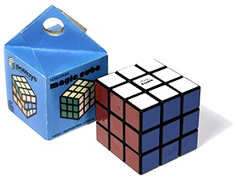

A hobby: Solving rubik's cubes
An activity I like to do is while I have some spare time, when I'm bored, on the train etc. is solve a rubiks cube as fast as I can. It involves recognising patterns on the cube and executed memorised algorithms that solve a particular part of the cube. I try to learn more algorithms everyday to help me get better times; right now my fastest time is 18 seconds.
